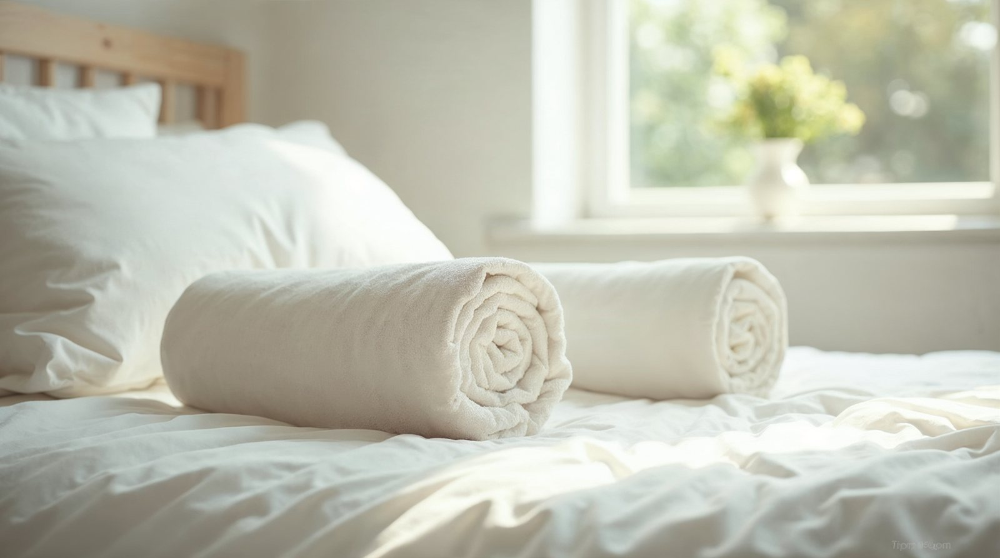
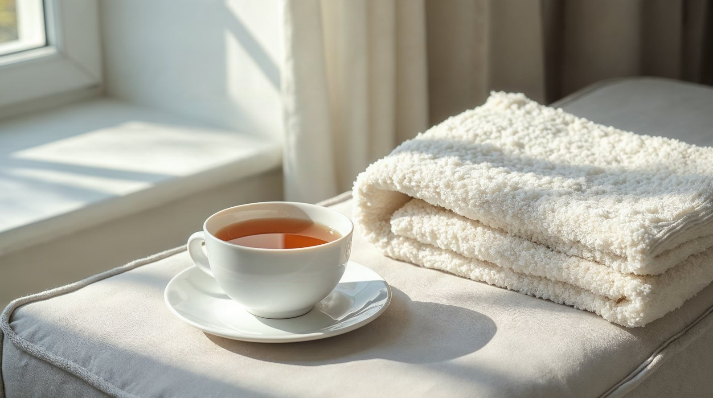
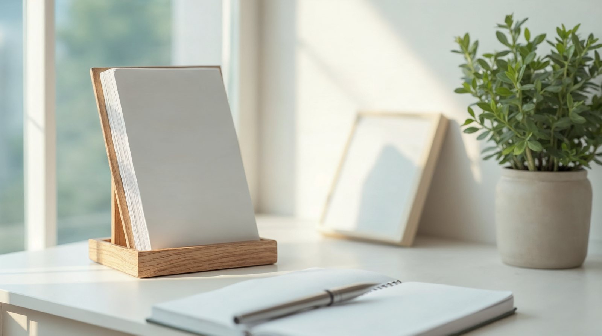
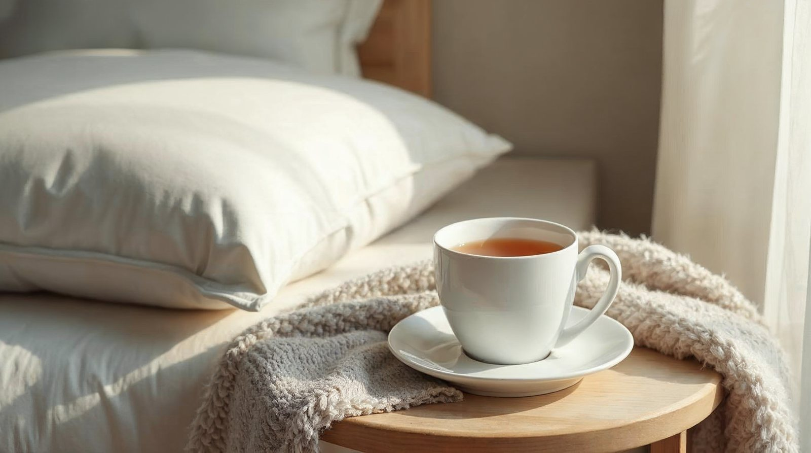
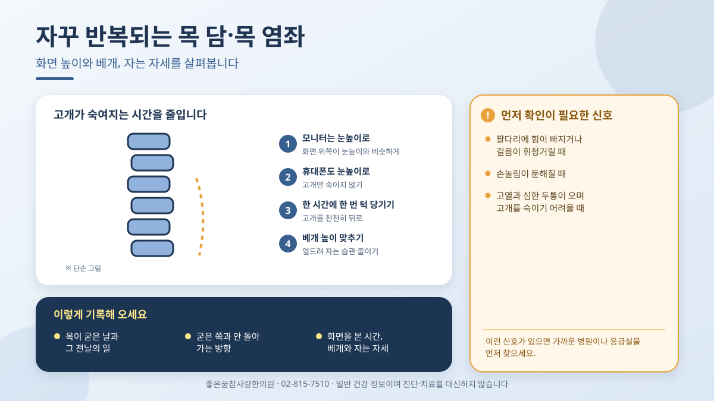

이종호 한의사 감수좋은꿈참사랑한의원 대표원장 (한의사 면허번호 19769)발행 2026-11-26 · 수정 2026-11-26
이 글의 차례
아침에 눈을 떠 고개를 돌리는 순간, 목 한쪽이 칼로 베듯 아파 그대로 멈춥니다. 어깨까지 같이 돌려야 옆을 볼 수 있고, 운전할 때 차선을 바꾸기도 겁이 납니다. 그런데 이번이 처음이 아닙니다. 몇 달에 한 번씩, 특히 바쁜 주간이 끝날 무렵이면 꼭 이렇게 목에 담이 걸립니다. 베개를 바꿔야 하나, 어디가 고장 난 건가 싶습니다.
우리가 흔히 '담 걸렸다'고 말하는 목의 통증은, 목 주변 근육과 작은 관절이 갑자기 굳고 아파 고개를 한쪽으로 돌리거나 숙이기 어려운 상태를 두루 이르는 말입니다. 의학적으로는 급성 목 염좌, 목 근육 긴장, 목 관절의 일시적인 걸림 등으로 나눠 부르기도 합니다. 대개 며칠에서 일주일 남짓 지나며 차츰 풀리는 경우가 많습니다.
진료실에서 제가 더 눈여겨보는 것은 '왜 자꾸 반복되는가'입니다. 한 번의 담은 잘못 잔 탓일 수 있지만, 같은 자리에 몇 번이고 다시 오는 담에는 그만한 사정이 있습니다. 하루 종일 고개를 숙이는 일, 늘 올라가 있는 어깨, 얕은 잠, 쌓인 긴장 같은 것들입니다.
반복되는 목 담 때문에 오시는 분들은 또 이렇다며 체념하듯 말씀하시는 경우가 많습니다. 몇 번을 겪어도 익숙해지지 않는 통증이니, 그 지친 마음을 압니다. 그래서 저는 이번 통증을 함께 살피는 것과 동시에, 다음 담이 오기까지의 간격을 넓혀 가는 방법을 함께 찾습니다.
왜 목에 담이 걸릴까요
목은 머리라는 무거운 공을 하루 종일 받치고 있습니다. 머리가 몸 위에 바로 얹혀 있을 때는 부담이 적지만, 고개가 앞으로 빠질수록 목 뒤 근육이 버텨야 하는 무게가 몇 배로 커진다고 알려져 있습니다. 휴대폰과 모니터를 보는 시간이 길어진 요즘, 목 뒤 근육은 쉴 틈이 거의 없습니다.
이렇게 지친 근육은 작은 자극에도 쉽게 굳어 버립니다. 잠자는 동안 목이 한쪽으로 꺾인 채 오래 있거나, 찬 바람을 맞거나, 갑자기 고개를 홱 돌리는 순간, 근육이 스스로를 지키려고 단단하게 수축하면서 통증과 함께 움직임이 막힙니다. 목의 작은 관절 사이에 얇은 막이 끼면서 갑자기 걸리는 경우도 있다고 봅니다.
한의학에서 말하는 '담(痰)'은 원래 몸 안의 진액이 제대로 돌지 못하고 뭉친 것을 뜻하는 말입니다. 피로와 긴장, 찬 기운, 소화가 더딘 상태에서 기혈의 흐름이 막히면 근육이 뭉치고 결린다고 보았습니다. 그래서 저는 목만 보지 않고, 요즘의 피로와 잠, 소화와 몸의 찬 정도를 함께 여쭙습니다.
반복되는 데에는 이유가 있습니다
같은 쪽 목에 자꾸 담이 걸린다면, 하루 중 그쪽 목이 유난히 고생하는 시간이 있는 경우가 많습니다. 모니터가 한쪽으로 치우쳐 있어 늘 고개를 돌린 채 일하는 분, 한쪽 어깨에만 가방을 메는 분, 전화기를 어깨와 귀 사이에 끼우는 분, 늘 같은 쪽으로 누워 자는 분이 그렇습니다.
잠도 큰 몫을 합니다. 너무 높거나 낮은 베개, 엎드려 자는 습관, 소파에서 고개를 꺾고 잠드는 일이 반복되면 밤사이 목이 회복하기보다 오히려 지치게 됩니다. 얕은 잠과 잦은 깸 역시 근육이 충분히 풀리지 못하게 합니다.
긴장과 스트레스도 빼놓을 수 없습니다. 마음이 바쁘고 긴장하면 어깨가 저절로 귀 쪽으로 올라가고, 이를 꽉 무는 습관이 생기기도 합니다. 바쁜 주간이 끝날 무렵 꼭 담이 온다는 분이 많은 것도 이 때문으로 보입니다. 쌓인 긴장이 한꺼번에 터지는 셈입니다.

비슷해 보이지만 다르게 살펴야 하는 경우
목 통증과 함께 팔로 저림이나 찌릿한 통증이 내려오고, 손가락까지 감각이 둔하거나 힘이 빠진다면 목디스크 쪽을 먼저 생각합니다. 고개를 뒤로 젖히거나 아픈 쪽으로 기울일 때 팔 증상이 심해진다면 더 그렇습니다. 이런 경우는 정형외과에서 확인해 보시길 권합니다.
목 옆에서 어깨 끝까지 아프고 팔을 옆으로 들어 올릴 때 더 아프다면, 목보다 어깨 관절 쪽 문제가 함께 있는지 봅니다. 어깨가 아파도 목까지 당기는 느낌으로 오는 경우가 많아, 목과 어깨를 따로 움직여 보며 어느 쪽에서 통증이 시작되는지 나눠 확인합니다.
교통사고나 넘어짐처럼 분명한 충격 뒤에 목이 아프다면, 담이라고 생각하고 넘기기보다 사진을 찍어 확인하는 것이 먼저입니다. 충격 직후보다 하루 이틀 지나 통증이 커지는 경우도 많습니다.
목과 어깨가 뻐근하면서 뒷머리가 조이듯 아프다면 긴장성 두통이 함께 있을 수 있습니다. 목 근육의 긴장과 두통은 서로 맞물려 있는 경우가 많아 함께 살핍니다.

담이 걸린 첫 며칠은 이렇게 지냅니다
담이 걸린 직후에는 아픈 쪽으로 억지로 고개를 돌려 풀어 보려는 분이 많습니다. 하지만 굳은 근육을 세게 늘이거나 꺾으면 오히려 더 단단해질 수 있습니다. 첫 하루 이틀은 아프지 않은 범위 안에서 천천히 움직이는 정도가 좋습니다.
- 고개를 아픈 쪽으로 억지로 돌리거나 세게 주무르지 않기
- 따뜻한 수건이나 따뜻한 샤워로 목과 어깨를 데워 주기(열감이 있으면 잠깐씩 시원하게)
- 아프지 않은 범위에서 고개를 천천히 숙였다 들기, 어깨를 으쓱했다 내리기
- 운전이나 고개를 많이 돌려야 하는 일은 가능하면 하루 이틀 쉬거나 줄이기
- 잘 때는 목이 꺾이지 않도록 베개 높이를 맞추고, 수건을 말아 목 아래를 받쳐 보기
대개 하루 이틀이 지나면 움직일 수 있는 범위가 조금씩 넓어집니다. 그때부터는 조금씩 움직임을 늘려 가며 목이 다시 굳지 않게 해 주세요. 일주일 넘게 거의 나아지지 않거나 오히려 심해진다면 다시 확인해 보시길 권합니다.

일하는 자리와 하루를 함께 봅니다
사무실에서 노트북으로 일하시는 분은 화면이 낮아 고개가 늘 앞으로 숙여져 있는 경우가 많습니다. 노트북 거치대와 따로 쓰는 키보드 하나만으로도 고개 각도가 꽤 달라집니다. 화면을 두 개 쓰신다면 주로 보는 화면을 정면에 두세요.
계산대나 상담 창구처럼 한쪽으로 몸을 돌려 일하는 자리, 미용이나 요리처럼 고개를 숙이고 팔을 든 채 오래 일하는 직업도 목 한쪽에 부담이 쌓이기 쉽습니다. 일의 모양을 바꾸기 어렵다면, 쉬는 시간마다 반대 방향으로 고개를 천천히 돌려 주는 것만이라도 챙겨 보세요.
공부하는 학생과 수험생도 자주 만납니다. 낮은 책상에서 고개를 깊이 숙인 채 몇 시간씩 앉아 있다 보면 목과 등 위쪽이 함께 굳습니다. 독서대를 써서 책을 세우고, 50분 공부 뒤 몇 분은 일어나 어깨를 돌려 주시길 권합니다.
집에 와서도 목은 쉬지 못하는 경우가 많습니다. 소파에 비스듬히 누워 휴대폰을 보는 자세는 목이 앞으로 꺾인 채 오래 머무르게 만듭니다. 잠들기 전 한 시간만이라도 화면을 내려놓는 것이 목에게는 작지 않은 휴식이 됩니다.
먼저 이렇게 여쭙니다
목을 보기 전에, 저는 대략 이런 순서로 여쭙니다.
- 이번에는 언제, 어떤 상황에서 목이 굳었나요?
- 지금까지 몇 번쯤, 어느 쪽에 비슷한 일이 있었나요?
- 고개를 어느 방향으로 움직일 때 가장 아픈가요?
- 팔이나 손으로 저림, 찌릿함, 힘 빠짐이 내려오나요?
- 하루에 고개를 숙이고 화면을 보는 시간은 대략 얼마나 되나요?
- 베개와 잠자는 자세, 요즘의 잠과 긴장은 어떠신가요?
다 기억하지 못하셔도 괜찮습니다. 자주 쓰는 베개 사진이나 책상 사진을 찍어 오시면 이야기가 훨씬 수월해집니다. 목이 굳었던 날짜를 휴대폰 달력에 표시해 두셨다면 그것도 함께 보여 주세요.
일상에서 먼저 해 볼 수 있는 것
담이 풀린 뒤가 오히려 중요합니다. 다음 담까지의 간격을 넓히려면, 목이 하루 동안 고생하는 시간을 조금씩 줄여 주어야 합니다.
- 모니터는 정면에, 화면 위쪽이 눈높이와 비슷하도록 올리기
- 휴대폰은 눈높이로 들어 보고, 고개만 숙이지 않기
- 한 시간에 한 번 고개를 천천히 뒤로 당겨 턱을 살짝 집어넣는 동작 몇 번 하기
- 가방은 양쪽 어깨에 메거나 번갈아 메고, 전화기를 어깨에 끼우지 않기
- 베개는 누웠을 때 얼굴이 천장을 바로 보고 목이 꺾이지 않는 높이로 맞추기
- 엎드려 자거나 소파에서 고개를 꺾고 잠드는 습관 줄이기
어깨의 긴장도 함께 풀어 주세요. 숨을 길게 내쉬며 어깨를 귀에서 멀리 떨어뜨리듯 내려 보는 것만으로도 목 뒤가 한결 편해진다는 분이 많습니다. 이를 꽉 무는 습관이 있다면 혀를 입천장에 가볍게 대고 윗니와 아랫니를 살짝 떼어 두는 연습을 해 보세요.
잠자리에 들기 전 몇 분, 목과 어깨를 따뜻하게 데우고 천천히 숨을 고르는 시간을 가져 보세요. 따뜻한 물로 샤워하며 목 뒤에 물줄기를 잠시 대 주는 것도 좋습니다. 하루 동안 쌓인 긴장을 그날그날 조금씩 내려놓는 것이 다음 담을 미루는 데 도움이 됩니다.
찬 바람도 피해 주세요. 에어컨 바람이 목에 바로 닿는 자리, 겨울 아침 목을 드러낸 출근길이 담의 방아쇠가 되기도 합니다. 얇은 목도리 하나가 생각보다 큰 역할을 합니다.
한의원에서 함께 살필 수 있는 경우
- 목에 담이 걸려 고개를 돌리기 어렵고, 팔 저림이나 힘 빠짐은 없는 경우
- 같은 쪽 목에 몇 달마다 담이 반복되는 경우
- 목과 어깨, 날개뼈 주변이 늘 단단하게 굳어 있고 두통이 자주 함께 오는 경우
- 바쁜 시기마다 목 담과 함께 잠, 소화가 흔들리는 경우
좋은꿈참사랑한의원에 처음 오시면 맥부터 짚고, 앞에서 말씀드린 순서로 목이 움직이는 방향과 가장 굳은 자리, 팔의 감각과 힘을 확인합니다.
그 뒤 진찰한 내용을 바탕으로 침, 약침, 추나, 온열 장비를 이용한 관리, 한약 상담 가운데 지금 상태에 맞는 것을 정합니다. 통증이 막 시작된 시기에는 굳은 근육을 세게 다루기보다 부드럽게 풀어 주는 쪽으로, 반복되는 분께는 등과 어깨, 자세까지 함께 살피는 쪽으로 범위를 정합니다. 팔 저림이 함께 있다면 정형외과 확인을 함께 권합니다.
다시 오시면 지난번 정한 것 하나가 실제로 어땠는지부터 이어서 듣습니다. 모니터 높이를 바꿔 보셨다면 오후의 목 뻐근함이 어땠는지, 베개를 바꿔 보셨다면 아침의 목이 어땠는지를 여쭙습니다.
이렇게 기록해 오시면 상담이 쉬워집니다
반복되는 목 담은 하루의 습관 속에 실마리가 숨어 있는 경우가 많습니다. 2주 정도만 짧게 적어 보세요.
- 목이 굳었던 날과 그 전날의 일(야근, 장거리 운전, 늦은 잠, 찬 바람)
- 굳은 쪽과 고개가 가장 안 돌아가는 방향
- 하루에 화면을 본 시간, 고개를 숙이고 일한 시간
- 잠든 시각과 깬 시각, 베개와 자는 자세
- 두통이나 팔 저림이 함께 있었는지
빠진 날이 있어도 괜찮습니다. 담이 걸리기 며칠 전부터의 흐름을 함께 들여다보면 내 목만의 방아쇠가 보이기 시작합니다.

다음 담까지의 간격을 넓혀 가며
목 담은 한 번 걸리면 며칠을 꼼짝 못 하게 하지만, 지나고 나면 금세 잊히기도 합니다. 그러다 또 바쁜 주간이 오고, 목은 다시 굳습니다. 이 고리를 끊으려면 아프지 않은 날에 목을 챙기는 습관이 필요합니다.
완벽하게 바꾸려 애쓰지 않으셔도 됩니다. 담이 걸리는 간격이 조금씩 넓어지고, 걸리더라도 덜 아프고 빨리 풀린다면 충분히 잘 가고 있는 것입니다. 저는 그 간격을 함께 재어 가는 것을 반복되는 목 통증 진료의 목표로 삼습니다.
이번 주에는 하나만 골라 보세요. 모니터 높이 올리기, 한 시간마다 턱 당기기 다섯 번, 베개 높이 맞추기. 다음에 오시면 그 하나가 목에 어떻게 닿았는지부터 여쭙겠습니다.
이런 증상은 먼저 확인이 필요합니다
- 목 통증과 함께 팔다리에 힘이 빠지거나, 걸음이 휘청거리거나, 손놀림이 둔해진 경우
- 열이 나면서 목이 뻣뻣해 고개를 앞으로 숙이기 어렵거나, 갑자기 머리가 깨질 듯 아픈 경우
이런 신호가 있으면 한의원보다 가까운 병원이나 응급실을 먼저 찾으세요.
함께 읽으면 좋은 글
- 자고 일어나면 목이 아픈 것은 베개 때문일까요?
- 어깨에 담이 걸려 쇄골·목 주변까지 당길 때 첫 며칠은 어떻게 하나요?
- 목에서 팔로 저림이 내려올 때(목디스크 의심)는 어떤 점을 먼저 확인하나요?
- 거북목과 일자목은 추나로 어떻게 살피나요?
- 스트레스를 받으면 뒷목이 당기고 머리가 아픈 긴장성 두통은 어떻게 살피나요?

여쭙는 것
- 이번에는 언제, 어떤 상황에서 목이 굳었나요?
- 지금까지 몇 번쯤, 어느 쪽에 비슷한 일이 있었나요?
- 고개를 어느 방향으로 움직일 때 가장 아픈가요?
생활에서 해 볼 것
- 모니터는 정면에, 화면 위쪽이 눈높이와 비슷하도록 올리기
- 휴대폰은 눈높이로 들어 보고, 고개만 숙이지 않기
- 한 시간에 한 번 고개를 천천히 뒤로 당겨 턱을 살짝 집어넣는 동작 몇 번 하기
한의원에서 함께 살필 것
- 목에 담이 걸려 고개를 돌리기 어렵고, 팔 저림이나 힘 빠짐은 없는 경우
- 같은 쪽 목에 몇 달마다 담이 반복되는 경우
- 목과 어깨, 날개뼈 주변이 늘 단단하게 굳어 있고 두통이 자주 함께 오는 경우
먼저 확인이 필요한 신호
- 목 통증과 함께 팔다리에 힘이 빠지거나, 걸음이 휘청거리거나, 손놀림이 둔해진 경우
- 열이 나면서 목이 뻣뻣해 고개를 앞으로 숙이기 어렵거나, 갑자기 머리가 깨질 듯 아…
한눈에 보는 표
| 구분 | 핵심 |
|---|---|
| 여쭙는 것 | 이번에는 언제, 어떤 상황에서 목이 굳었나요? 지금까지 몇 번쯤, 어느 쪽에 비슷한 일이 있었나요? |
| 생활에서 해 볼 것 | 모니터는 정면에, 화면 위쪽이 눈높이와 비슷하도록 올리기 휴대폰은 눈높이로 들어 보고, 고개만 숙이지 않기 |
| 한의원에서 함께 살필 것 | 목에 담이 걸려 고개를 돌리기 어렵고, 팔 저림이나 힘 빠짐은 없는 경우 같은 쪽 목에 몇 달마다 담이 반복되는 경우 |
| 먼저 확인이 필요한 신호 | 목 통증과 함께 팔다리에 힘이 빠지거나, 걸음이 휘청거리거나, 손놀림이 둔해진 경우 열이 나면서 목이 뻣뻣해 고개를 앞으로 숙이기 어렵거나, 갑자기 머리가 깨질 듯 아픈 경우 |
자주 묻는 질문
목에 담이 걸렸을 때 세게 주무르면 빨리 풀리나요?
막 굳은 근육을 세게 주무르거나 억지로 꺾으면 오히려 더 단단해질 수 있습니다. 첫 하루 이틀은 따뜻하게 데우고, 아프지 않은 범위에서 천천히 움직이는 쪽을 권합니다.
베개를 바꾸면 담이 덜 걸릴까요?
베개가 너무 높거나 낮아 목이 꺾인 채로 자고 있었다면 도움이 될 수 있습니다. 다만 낮 동안 고개를 숙이는 시간과 긴장도 함께 줄여야 반복되는 간격이 넓어지는 경우가 많습니다.
담이 걸렸을 때 찜질은 따뜻하게 하나요, 차갑게 하나요?
대부분은 따뜻하게 데워 주는 쪽이 편하다고 하십니다. 다친 직후 열감과 붓기가 느껴진다면 잠깐씩 시원하게 해 보시고, 내 목이 편한 쪽을 고르시면 됩니다.
자꾸 반복되면 목디스크로 바뀌나요?
목 담이 반복된다고 해서 디스크가 된다고 단정할 수는 없습니다. 다만 팔로 저림이 내려오거나 손에 힘이 빠지는 느낌이 생긴다면 정형외과에서 확인해 보시길 권합니다.
담이 걸린 상태에서 운동을 해도 되나요?
통증이 큰 첫 며칠은 고개를 많이 쓰는 운동은 쉬고, 걷기처럼 목에 부담이 적은 활동 정도가 무난합니다. 움직임이 돌아오면 목과 어깨를 가볍게 푸는 운동부터 다시 시작하세요.
좋은꿈참사랑한의원은 재진 때 지난번 이야기부터 이어서 여쭙니다. 진료시간과 예약은 오시는 길에서 확인하세요.
어디서 상담받을 수 있나요?
좋은꿈참사랑한의원은 서울 동작구 만양로2길 2 신성빌딩 3층·5층(서울 동작구 상도동, 7호선 상도역 3번 출구 근처)에 있습니다. 한의사 3명(이종호 대표원장, 조영기 수석진료원장, 정원영 진료원장)이 진료합니다. 진료시간은 평일 09:30~20:00(점심 13:00~14:00), 토·일·공휴일 09:30~15:00이며, 방문 전 전화로 확인을 권합니다. 예약은 네이버 예약, 카카오톡 상담, 전화 02-815-7510로 받습니다.
이 글은 일반적인 건강 정보이며 개인의 진단이나 치료를 대신하지 않습니다. 증상이 있거나 복용 중인 약이 있다면 진료를 통해 확인하세요. 치료 효과는 개인마다 다를 수 있습니다.
작성 기준: 일반적으로 알려져 있는 건강 정보를 참고해 정리했습니다(대표원장 감수). 증상 기록은 1~2주 동안 하루 1회, 비슷한 시간에 적어 오시면 지난 상태와 비교하기 쉽습니다.